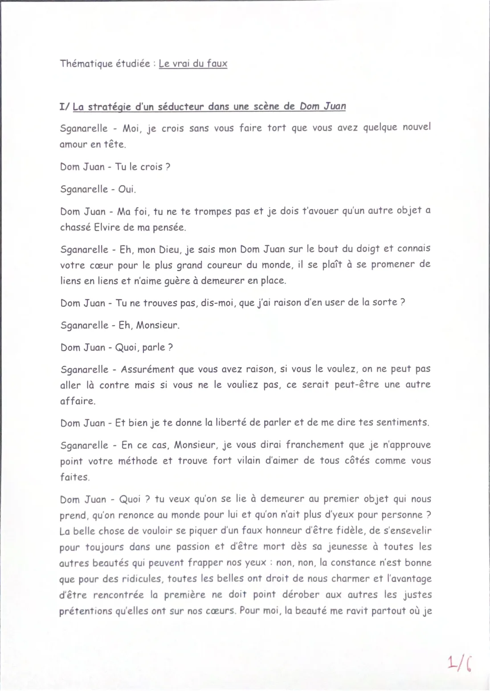
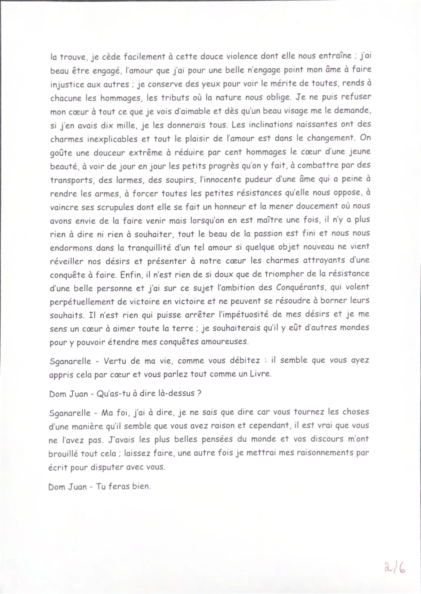

Le vrai du faux
Repères de révision sur la synthèse de documents, le vrai, le faux, la mythomanie et Dom Juan de Molière.
Le corpus
Une synthèse de documents s’appuie sur un ensemble de textes accompagné d’une illustration autour de la thématique étudiée pendant l’année.
Le travail demandé
Il faut répondre à plusieurs questions en regroupant les points communs et en identifiant les différences contenues dans les documents.
Deux termes antithétiques
Le thème s’appuie sur l’expression « démêler le vrai du faux » : vrai et faux sont deux antonymes.
Doxa et objectivité
La doxa correspond à l’opinion commune et reçoit ici une connotation péjorative. La vérité reste une notion difficile à définir avec une entière objectivité.
Une thématique actuelle
Les exemples étudiés concernent l’intelligence artificielle, les infox / fake news, le statut de l’information et la propagande, les réseaux sociaux, les communiqués commerciaux et l’industrie pharmaceutique.
Une pathologie du rapport au réel
Le texte présente la mythomanie comme une tendance pathologique au mensonge relevant de la psychiatrie. Le mythomane ne perçoit plus correctement la frontière entre ce qu’il raconte et la réalité.
Repères historiques
Le trouble est décrit par le psychiatre allemand Anton Delbrück en 1891, puis repris dans les travaux du psychanalyste français Ernest Dupré en 1905. Le terme est aujourd’hui moins utilisé par les professionnels de santé.
Mythomane ou menteur ?
Le texte distingue le mensonge conscient du manipulateur ou de l’escroc et le mensonge du mythomane, qui vit dans une réalité fictionnalisée sans en avoir pleinement conscience.
Symptômes et causes possibles
Les mensonges peuvent être répétés et aller jusqu’à la réinvention de la vie. Le texte associe notamment cette fuite du réel à la souffrance, au manque d’estime de soi, à certains chocs émotionnels et à d’autres troubles psychiatriques.
Piste d’essai personnel : « Estimez-vous que, dans la société au sein de laquelle vous évoluez, le mensonge est omniprésent ? »
Situation de l'extrait
Sganarelle soupçonne Dom Juan d'avoir un nouvel amour en tête. Le maître et son valet confrontent alors deux conceptions opposées du sentiment amoureux.
Deux points de vue antagonistes
Sganarelle condamne l'infidélité de son maître. Dom Juan, au contraire, critique la fidélité et défend l'inconstance, le changement et la multiplication des conquêtes.
Une tirade persuasive
Dom Juan développe sa conception de l'amour avec éloquence. Il stigmatise la fidélité, présente le changement comme une source de plaisir et transforme la séduction en véritable stratégie.
Mensonge et manipulation
La technique de séduction dévoile un personnage manipulateur : le mensonge devient un moyen de parvenir à ses fins, sans volonté de protéger ceux qu'il trompe.
Fidélité rejetée
Dom Juan présente la fidélité comme un « faux honneur » et refuse l'idée de rester attaché définitivement à une seule personne.
Éloge de l'inconstance
Le plaisir amoureux réside, selon lui, dans le changement, les nouvelles inclinations et la progression d'une nouvelle conquête.
Un vocabulaire guerrier
Il se compare aux conquérants et décrit la séduction comme une succession de victoires, de résistances à vaincre et de cœurs à conquérir.
Un personnage autocentré
Son plaisir personnel prime sur les conséquences de ses actes. Il se montre indifférent aux personnes séduites et notamment à Elvire.
Question de lecture : quel regard portons-nous sur Dom Juan, archétype du menteur ? Le personnage apparaît radical, insatiable, manipulateur et peu préoccupé par les répercussions de ses actes.


| Mot | Définition | Phrase d’exemple |
|---|---|---|
| Erroné | Quelque chose de faux. | Le résultat annoncé dans le rapport était erroné à cause d’un mauvais calcul. |
| Nonobstant | Cependant, néanmoins. | Nonobstant les difficultés rencontrées, l’équipe a terminé le projet dans les délais prévus. |
| Mégalomane | Quelqu’un atteint par la folie des grandeurs. | Le personnage mégalomane se croit supérieur aux autres et rêve de contrôler le monde entier. |
| Affabuler | Mentir. | Pour impressionner ses camarades, il commence à affabuler sur des exploits qu’il n’a jamais réalisés. |
| Récurrence | Qui survient plusieurs fois. | La récurrence de cette erreur montre qu’il faut vérifier la méthode utilisée. |
| Paroxysme | Le degré maximal de quelque chose. | La tension atteint son paroxysme lorsque les deux personnages découvrent enfin la vérité. |
| S’extirper | Se sortir de, s’arracher à. | Après plusieurs tentatives, elle réussit à s’extirper d’une situation devenue très dangereuse. |
| Voire | Même. | Cette information peut être trompeuse, voire dangereuse si elle est partagée sans vérification. |
| Compulsif | Incontrôlable. | Son comportement compulsif le pousse à vérifier son téléphone presque toutes les minutes. |
| Ardu | Difficile. | Comprendre ce texte complexe peut sembler ardu sans relire attentivement chaque argument. |
| Distordu | Déformé, altéré. | Son récit distordu transforme les faits réels pour présenter une version plus avantageuse. |
| Mot | Définition | Repère dans le texte |
|---|---|---|
| Antagoniste | Qui s'oppose directement à une autre position. | Dom Juan et Sganarelle défendent des visions opposées de l'amour. |
| Éponyme | Qui donne son nom à l'œuvre. | Dom Juan est le protagoniste éponyme de la pièce. |
| Tirade | Longue réplique prononcée par un personnage. | Dom Juan développe sa conception de l'amour dans une longue tirade. |
| Éloquence | Art de s'exprimer de manière persuasive et efficace. | Dom Juan défend son point de vue avec talent et éloquence. |
| Stigmatiser | Condamner ou critiquer fortement. | Il stigmatise la fidélité avant de faire l'éloge de l'inconstance. |
| Inconstance | Absence de fidélité ou de stabilité dans les sentiments. | Dom Juan valorise le changement permanent de conquête. |
| Insatiable | Qui ne peut jamais être pleinement satisfait. | Son désir de conquêtes amoureuses semble sans limite. |
| Autocentré | Principalement tourné vers soi-même et ses propres intérêts. | Dom Juan recherche son plaisir sans se soucier des conséquences. |